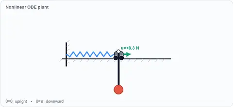
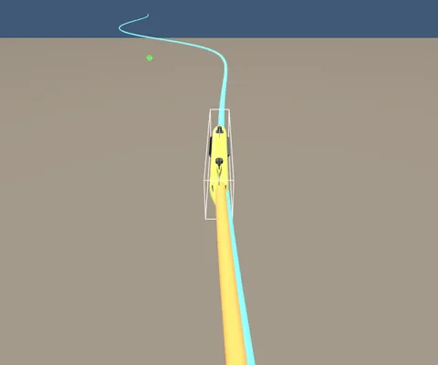

I am a third-year undergraduate in Automation (Innovation Class) at Huazhong University of Science and Technology. My interest is in learning and control of dynamical systems. I am preparing to apply for a Ph.D.
Research
Guiding trajectory generation with robot dynamics
BIIC Laboratory, HUST · with Dr. Zhengyu Zhang and Prof. Jiankun Sun
A simulated runner can only push so hard or bend a joint so far. How can a generative model account for those limits when it creates new experience for a robot to learn from? We explored this question in offline reinforcement learning, where a policy learns from previously collected interactions. Using the HalfCheetah locomotion benchmark, we guided a diffusion model as it generated short trajectories. A learned dynamics model assessed how well each movement followed from the preceding state and action, while penalties steered samples away from actuator and joint limits. We then used the generated experience to study how physical consistency affects policy learning.
Learning to predict motion for model predictive control
i4-FSI Laboratory, Westlake University · with Prof. Dixia Fan

Closed-loop swing-up and stabilization, simulated.

Path following in the Gazebo vehicle simulation.
Steering an underwater vehicle through a bend means anticipating where today's thrust and steering commands will take it several seconds later. We explored whether a neural operator could learn that relationship well enough to guide a controller. We started with a simulated slider–pendulum, using DeepONet to predict how a sequence of forces would move the pendulum as the controller swung it upright and balanced it. We then extended the approach to 3D underwater path following with a multi-input neural operator. At each update, the controller used the learned model to compare possible maneuvers, applied the first command, and replanned from the vehicle's new state.